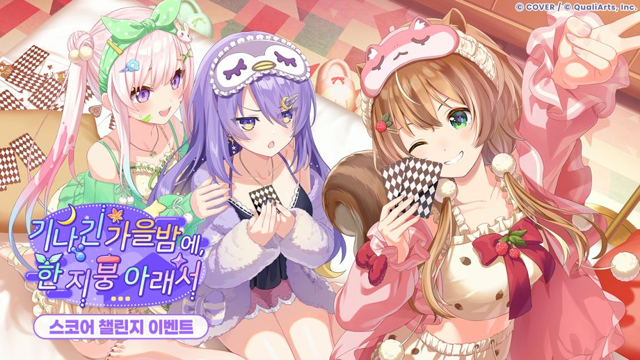
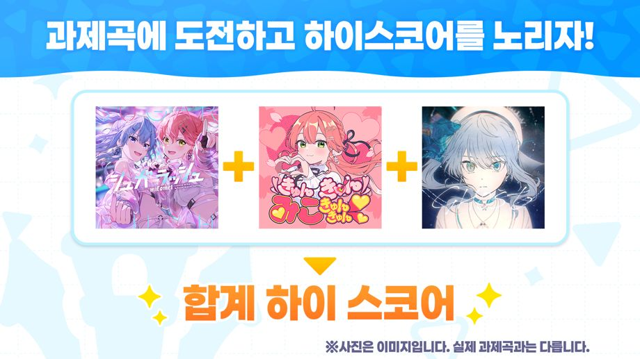
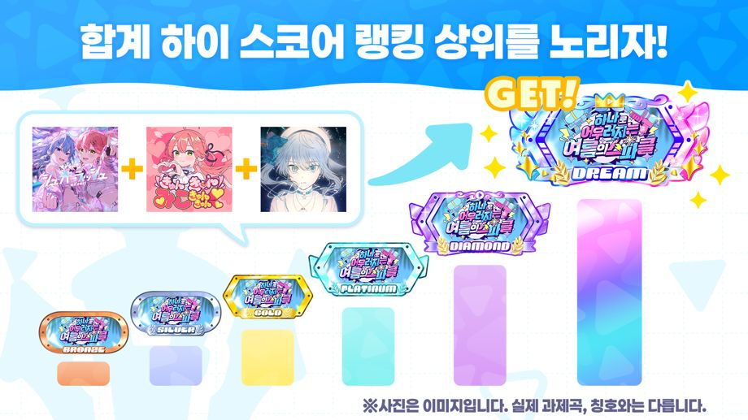
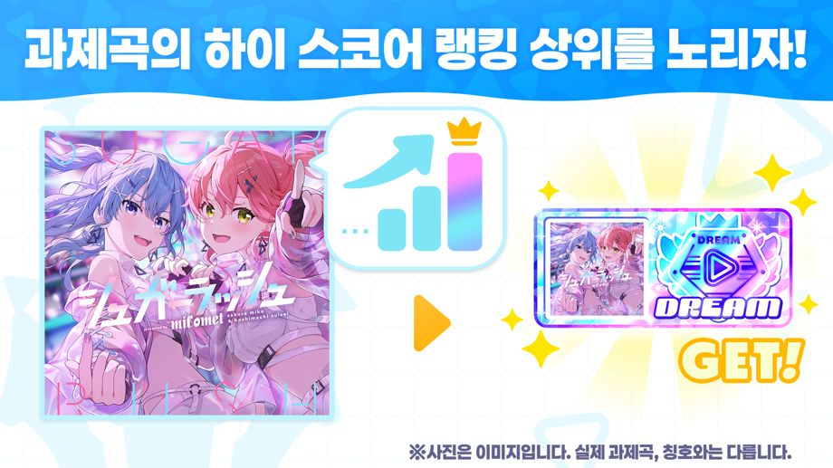
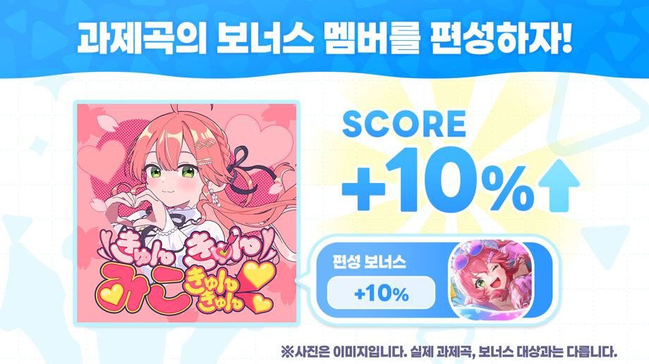
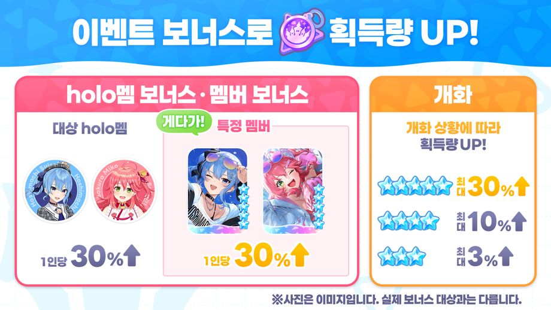

스코어 챌린지 이벤트 「기나긴 가을밤에, 한 지붕 아래서」가 개최!
◆참가 조건
메인 스토리 1장 4화 「Mythical Connection」 클리어
◆개최 기간
2026-11-06 12:00:00,2026-11-12 19:59:59
◆결과 발표 기간
2026-11-13 12:00:00,2026-11-18 19:59:59
◆이벤트 배지 교환 기한
2026-11-18 19:59:59
이벤트 개요

스코어 챌린지 이벤트는 이벤트 과제곡에 도전하여 최고 점수를 노리는 이벤트입니다.
하이스코어 랭킹에 입상하거나, 기간 동안 라이브와 미니게임을 플레이하면 이벤트 배지를 획득할 수 있습니다.
이벤트 배지를 모으면 교환소에서 이벤트 메모리 등의 아이템으로 교환할 수 있습니다.
◆이벤트 메모리

합계 하이스코어 랭킹

합계 하이스코어 랭킹은 이벤트 과제곡의 기간 한정 스코어를 합산한 점수를 기준으로 집계되는 랭킹입니다.
랭킹에 입상하면 이벤트 한정 칭호 등의 보상을 획득할 수 있습니다.
※자세한 내용은 [이벤트] → [랭킹] → [합계 하이스코어 랭킹]에서 확인해 주세요.
하이 스코어 랭킹

하이 스코어 랭킹은 이벤트 과제곡별로 기간 한정 스코어를 겨루는 랭킹입니다.
랭킹에 입상하면 이벤트 한정 칭호를 획득할 수 있습니다.
※이벤트 과제곡에서는 이벤트 기간 한정 스코어와 일반 스코어 모두 저장됩니다.
※자세한 내용은 [이벤트]→[랭킹]→[하이 스코어 랭킹]을 확인하시기 바랍니다.
이벤트 스코어 보너스

이벤트 보너스에는 보너스 대상 멤버를 편성해 이벤트 과제곡에 도전하면 기간 한정 스코어가 상승하는 스코어 보너스가 있습니다.
스코어 보너스 대상 멤버는 이벤트 과제곡마다 다릅니다.
◆이벤트 과제곡
・Dramatic XViltration
・Metropolis
・Multiverse
・Lucu Juga
※자세한 내용은 [이벤트]→[이벤트 보너스]를 확인하시기 바랍니다.
이벤트 획득 보너스

이벤트 보너스에는 라이브에서의 이벤트 배지 획득량이 높아지는 보너스가 있습니다.
라이브의 획득 보너스에는 「멤버 보너스」, 「holo멤 보너스」, 「개화 보너스」의 3종류가 있습니다.
・멤버 보너스: 대상 멤버를 편성해 라이브에 도전하면 획득량 상승
・holo멤 보너스: 대상 holo멤의 멤버를 편성해 라이브에 도전하면 획득량 상승
・개화 보너스: 편성한 멤버의 개화 상황에 따라 라이브 도전 시 획득량 상승
또한 이벤트 보너스에는 미니 게임에서의 이벤트 배지 획득량이 높아지는 보너스가 있습니다.
미니 게임의 획득 보너스에는 「미니 게임 보너스」, 「멤버 보너스」의 2종류가 있습니다.
・미니 게임 보너스: 대상 미니 게임에 도전하면 획득량 상승
・멤버 보너스: 대상 멤버를 보유하기만 해도 획득량 상승
◆보너스 대상 holo멤버
・아윤다 리스
・무나 호시노바
・아이라니 이오피프틴
◆보너스 대상 멤버
・★5 비몽사몽 몸단장을 아윤다 리스
・★5 별이 빛나는 밤, 느긋한 목욕 타임 무나 호시노바
・★5 따끈따끈 양지 스마일 아이라니 이오피프틴
◆보너스 대상 미니 게임
・어둠 속 추격
※자세한 내용은 [이벤트]→[이벤트 보너스]를 확인하시기 바랍니다.
주의 사항
・이번 이벤트에서 획득한 이벤트 배지는 다음 이벤트로 이월되지 않습니다.
・교환 기한이 경과한 이벤트 배지는 이용하실 수 없습니다. 주의하시기 바랍니다.
・랭킹 보상은 랭킹 결과 발표 후 로그인하면 [파크]→[메뉴 아이콘]→[선물]에서 수령하실 수 있습니다.
・결과 발표 기간 내에 한 번도 로그인하지 않아도 기간 종료 후 선물함에서 수령하실 수 있습니다.
・결과 발표 기간 종료 후 수령하지 않은 달성 완료 미션 보상은 기간 종료 후 [파크]→[메뉴 아이콘]→[선물]에서 수령하실 수 있습니다.
・본 이벤트의 교환소에서 교환 가능한 이벤트 메모리는 추후 재등장할 수 있습니다.
・통신 상태 등의 영향으로 시작 및 종료 시간에 1초 전후의 오차가 생기는 경우가 있습니다.
・개최 기간 및 내용은 예고 없이 변경될 수 있습니다.
・자세한 내용은 [파크]→[이벤트]에 있는 본 이벤트를 확인하시기 바랍니다.